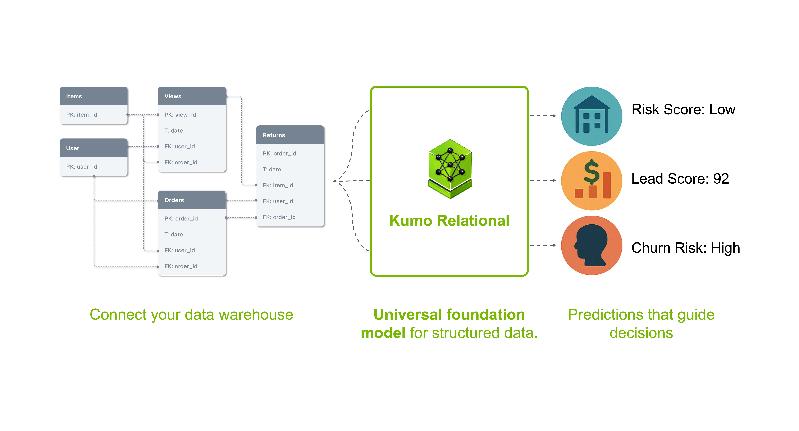

Kumo Relational — это предобученная модель, которая работает непосредственно с базой данных: понимает таблицы, внешние ключи и временные метки. Инженер описывает запрос на декларативном языке PQL («что предсказать»), модель подтягивает до 10 000 исторических примеров как контекст — и выдаёт прогноз за один прямой проход. Никакого обучения под задачу, никакой ручной подготовки признаков и никакого «разглаживания» таблиц в одну плоскую выборку.
По данным самих авторов, это первая few-shot модель, обходящая классическое обучаемое ML на реляционных бенчмарках: 41 задача на 15 базах (RelBench, SAP SALT, 4DBInfer) — средний прирост почти 4 пункта AUROC над градиентным бустингом с вручную сделанными признаками, плюс 8% MRR к ансамблям AutoGluon на корпоративном бенчмарке SAP SALT (16% после дообучения) и около 25% к другим «табличным» фундаментальным моделям. В лидерборде RelArena модель держит точность конкурентов примерно в 430 раз быстрее и выдерживает работу всего на 0,2% обучающих данных и при удалении до 75% внешних ключей.
NVIDIA подаёт Kumo как часть Agent Toolkit: если LLM позволяют агенту читать, писать и рассуждать, то модели структурных данных дают ему способность предвидеть — какой клиент уйдёт, сколько единиц товара продастся — и действовать на опережение. Модель уже рассчитана на вызовы агентами, а масштабируется до баз в 500+ млрд строк. Доступна сразу: открытый код (Apache 2.0) в GPU-библиотеке structured-data-models, веса — на Hugging Face, плюс вариант в виде NVIDIA NIM; Snowflake уже встраивает Kumo в свои Notebook-окружения.
Сюда же вошли соседние релизы семейства — Kumo Forecast для временных рядов и обновлённый Agent Knowledge Foundation с библиотеками CUDA-X: идею «агента, знающего внутренние данные компании без их перетаскивания в другое хранилище», NVIDIA сейчас делает главным enterprise-сюжетом сезона.